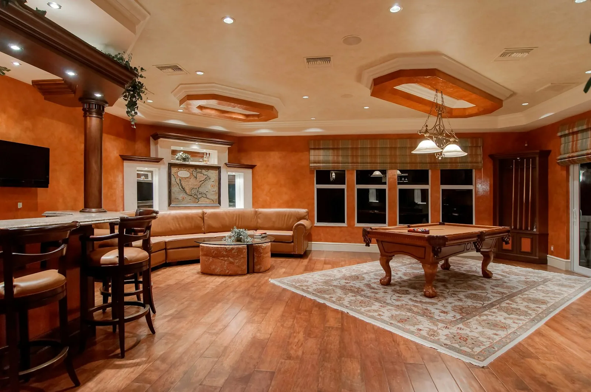

The Framework: When DIY Is and Isn't Worth It
DIY is not about saving money — it's about allocating your most constrained resource correctly. If you have 40 hours of free weekend time, spend it on high-skill-threshold, low-licensed-trade tasks where contractor margins are thickest: painting, tile, flooring prep, demo, and landscaping. Never DIY electrical, structural work, or anything that requires a licensed permit inspection.
- Best DIY candidates: labor-heavy, low-liability tasks with forgiving learning curves
- Never DIY: anything requiring a permit that a licensed professional must sign off on
- The hidden DIY cost: your time has a value — calculate at your real hourly rate
- The contractor markup: typically 20–40% on materials, 50–80% on labor
Trade-by-Trade Cost Comparison
| Trade / scope item | Contractor cost | DIY cost | DIY viable? |
|---|---|---|---|
| Interior painting (full house, 2,000 sq ft) | $6,000 – $10,000 | $800 – $1,800 | ✓ Strong yes |
| Hardwood floor refinishing | $3,500 – $6,000 | $600 – $1,200 (rentals) | ✓ Yes — requires prep |
| Tile installation (bath, 60 sq ft) | $2,800 – $5,500 | $400 – $900 (materials) | ✓ Yes — learning curve |
| Demolition (non-structural) | $2,500 – $5,000 | $200 – $800 (dumpster) | ✓ Always DIY demo |
| Landscaping / hardscaping | $4,000 – $12,000 | $800 – $2,500 | ✓ Yes |
| Plaster skim coat repair | $3,200 – $8,000 | $300 – $900 (materials) | ✓ With training |
| Window weatherstripping + re-glaze | $250 – $600 per window | $60 – $140 per window | ✓ Strong yes |
| Cabinet painting + hardware | $3,000 – $7,000 | $300 – $800 | ✓ Yes |
| 200-amp electrical service upgrade | $9,500 – $18,000 | Not legal (permit required) | ✗ Licensed only |
| Full house repipe to PEX | $5,800 – $14,000 | Not advisable without license | ✗ Licensed only |
| Load-bearing wall removal + beam | $4,500 – $12,000 | Cannot DIY — structural permit | ✗ Engineer required |
| HVAC replacement (furnace + AC) | $8,500 – $20,000 | $3,500 – $8,000 (self-install, risk) | ⚠ Licensed preferred |
| Roofing (asphalt shingles) | $8,000 – $18,000 | $2,800 – $6,000 (materials only) | ⚠ High risk — hire out |
| Kitchen cabinet installation | $2,500 – $6,000 labor | $0 (DIY with a level and a helper) | ✓ Strong yes |
| Countertop installation (laminate/butcher block) | $800 – $2,000 | $100 – $400 | ✓ Yes |
The pattern is consistent across all 15 rows: the licensed trades are where the money is spent — and where the rework risk lives. DIY wins the labor-heavy finishes; contractors earn their markup on anything with a permit, an engineer's stamp, or a liability signature.
The Contractor Vetting Protocol
When you do hire out, the contractor selection process determines whether you pay fair market rate or 40% over it. The Kit includes 10 technical interview questions and 13 red-flag behaviors to screen before signing — and five rules that apply immediately:
- Never pay more than 10–15% upfront. A contractor asking 40–50% down is a warning sign — or in a cash-flow problem.
- Get 3 bids on every trade. Not 2 — 3. The range between highest and lowest is often $4,000–$12,000 for a single trade item.
- Require a fixed-price contract with a change-order cap. Time-and-materials contracts on old-house work almost always run 30–60% over estimate.
- Check license and insurance before signing. General liability minimum $1M; workers' comp required if they have employees.
- Never pay the final 10% until the punch list is complete. This is your only leverage for defect correction.
Spend your weekends on the trades with the thickest margins, and your contract discipline on the trades with the thinnest patience.— Chapter 07, The Contractor Playbook
How the DIY decision changes by era
The trade table above assumes a century home, but the DIY-versus-hire answer shifts subtly by decade —mostly because of what the walls contain:
- Pre-1920 houses: plaster over wood lath, knob-and-tube or early romex, site-built trim. Plaster repairs are more skilled, wiring more often requires full replacement —the licensed share of the budget is highest here. DIY wins are paint, floors, and hardware.
- 1920–1945: the sweet spot for DIY owners: standard stud spacing, simpler plaster, and plumbing that is often still reparable rather than replaceable. A competent weekend owner can keep 40% of the trades in-house.
- 1945–1975: postwar construction —faster framing, engineered systems, but also the era of galvanized supply, aluminum wiring in the 60s–70s, and asbestos in tile and ducts. The licensed share pops back up; the DIY wins stay on the finish side.
The rule survives every decade: DIY the trades with forgiving learning curves and thick contractor margins; hire everything carrying a permit, an engineer stamp, or a liability signature. The wiring reality guide shows the most expensive version of ignoring that rule.
The tool-cost trap
The trade table ignores one column: the tools. Every DIY row quietly assumes you own the equipment, and on a century home that assumption costs more than on new construction — because old houses demand specialty gear.
- The always-worth-it buys: a stud finder that reads through plaster ($80–$180), a rotary hammer with chisel bits ($150–$300) for the demo row, and a decent orbital sander ($90–$160) for the paint and refinish rows. These pay for themselves in the first room and last for every project after.
- The rent-don't-buy list: the drum floor sander (rental systems come with the training pass and the filter package), the tile wet saw (rent $45–$70 per day versus $450 to own), and the scaffolding. On a single renovation, rental beats purchase by 3–5 times.
- The never-touch list: anything the licensed trades use for their row — panel testers beyond the portable type, pipe threaders, and duct tools. Buying them makes the DIY rows look cheaper than they are.
Add the real tool budget before you decide the rows. A $300 tool purchase on a demo-plus-painting plan is fine; the same $300 on a tile row you will never repeat is a subsidy to the rental counter.
The mise-en-place hour
Professional kitchens have a setup routine before service; renovation projects need the same. The tracked cases that ran a weekly "mise-en-place hour" finished an average of six percent under their target budget — the ones that improvised week to week ran over by about the same amount.
- What the hour covers: thirty minutes updating the schedule and the materials list, fifteen minutes reviewing the next trade visit (tool needs, site access, permits), fifteen minutes photographing progress. The photos are the part owners skip and later regret — they are the only proof of what the walls looked like when a dispute starts.
- Where DIY and contractor rows meet: the hour is also when the owner confirms the licensed rows are scheduled, permitted, and inspected. The most common failure mode in the survey was a DIY owner who kept their rows on time while the licensed row waited on a permit that nobody had pulled — the schedule costs more than the trade.
- The tools for the hour: a clipboard checklist (the Kit includes one), a phone for photos, and a printed copy of the 90-day sequence. Thirty minutes, one night a week, zero extra tools.
It does not sound like a cost item, but it is the cheapest row in the whole table — it protects every other row from rework, and it carries no contractor markup at all.
Frequently asked questions
15–25% of total renovation cost, on average, from owners who DIY the finishes (paint, demo, flooring, tile, trim) and hire the licensed trades. The 100+ owner survey's best performers hit 30% — by also managing the scheduling themselves and buying materials on sale, which the Kit's sequence chapter supports.
Sand-and-finish of original hardwood: yes, with rental equipment and a practice closet. The one rule: never drum-sand without training — a moment's hesitation cuts a groove no finish hides. See the floor lottery guide for the full recipe.
No, on century homes. The rewire touches insurance, permits, and fire risk — the $9.5k–$18k contractor cost includes liability and inspection sign-off. A DIY rewire that fails inspection costs more than the pro ever would (mistake 09 in the 13 mistakes guide).
Use your real hourly rate (what your job pays, or the minimum you'd work weekends for), plus a 1.5× multiplier for demo and painting fatigue. If the DIY path saves $300 of contractor cost per hour of your time, it's worth it; if it saves $25, hire the pro and work overtime instead.
Honestly, yes —the two rows that hurt most (tile and roofing) are the two where a weekend at 25 becomes a week at 55. The framework adapts: keep the paint and demo, hire the tile and anything above ground level. The dollar math shifts, but the licensed trades stay licensed rule never changes.